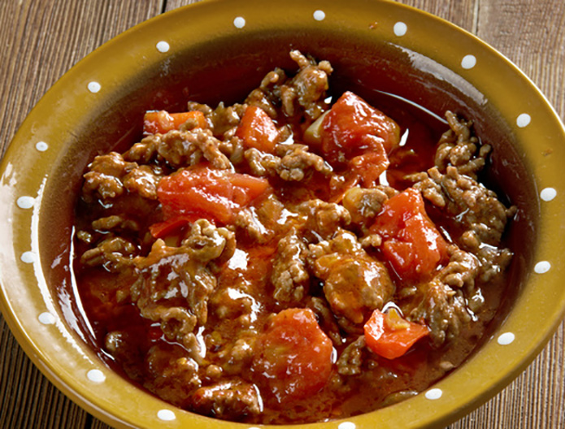

Axoa

Ingredients
- Grounded veal
- 2 onions
- 1 red pepper
- 1 green pepper
- 4-5 chili pepper
- 10 garlic cloves
- Pepper from Espelette
- Rosemary, thyme, and savory
- 25 cl of white wine
- 20g of flour
- Stock veal
- Olive oil, salt and black pepper
- 20g of tomato paste
Steps
- Brown the veal in the oil and cuts the vegetables into small pieces.
- Add vegetables and sauté for 2 minutes over high heat.
- Deglaze with white wine, then add the tomato paste, rosemary, Espelette pepper, salt, and pepper. Afterward, reduce the heat.
- Cover over low heat for 40 minutes.
- Add veal stock et flour to thicken the mixture.
- Re-season if necessary and leave for 5 minutes at low heat.